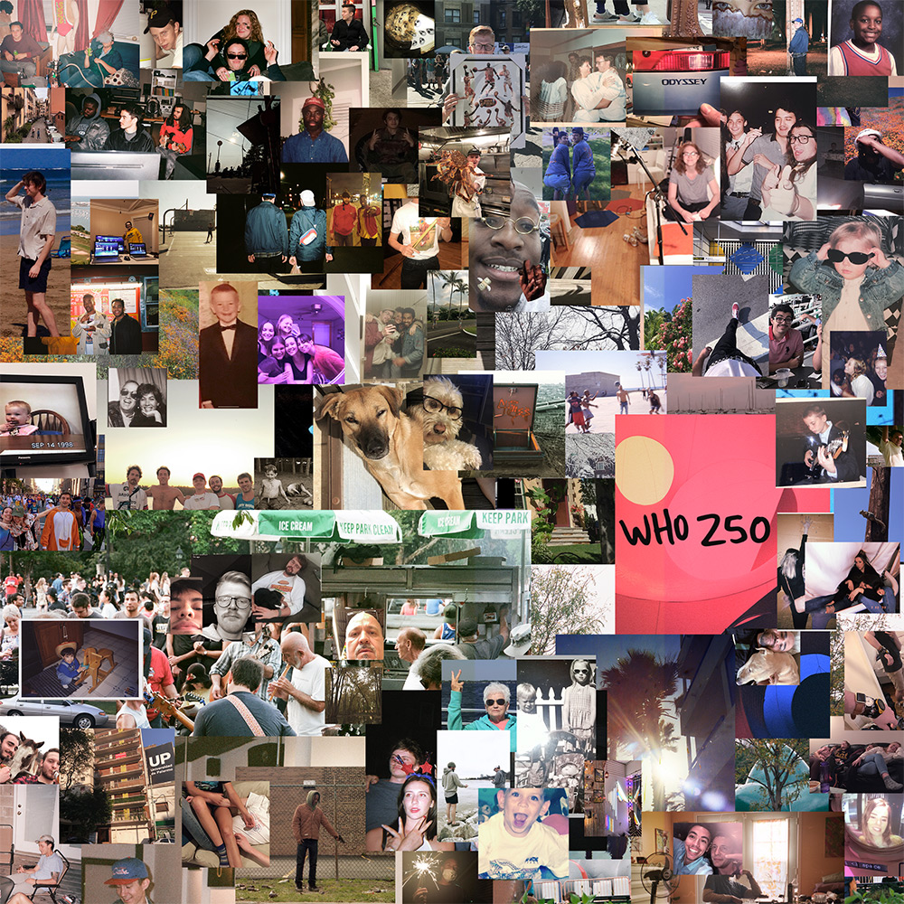

<!DOCTYPE html>
<html lang="en">
<head>
    <meta charset="UTF-8">
    <meta name="viewport" content="width=device-width, initial-scale=1.0">
    <meta http-equiv="X-UA-Compatible" content="ie=edge">
    <title>vlush | WHO 250</title>
    <link rel="stylesheet" href="style.css">

    <link rel="apple-touch-icon-precomposed" sizes="57x57" href="favicon/apple-touch-icon-57x57.png" />
    <link rel="apple-touch-icon-precomposed" sizes="114x114" href="favicon/apple-touch-icon-114x114.png" />
    <link rel="apple-touch-icon-precomposed" sizes="72x72" href="favicon/apple-touch-icon-72x72.png" />
    <link rel="apple-touch-icon-precomposed" sizes="144x144" href="favicon/apple-touch-icon-144x144.png" />
    <link rel="apple-touch-icon-precomposed" sizes="60x60" href="favicon/apple-touch-icon-60x60.png" />
    <link rel="apple-touch-icon-precomposed" sizes="120x120" href="favicon/apple-touch-icon-120x120.png" />
    <link rel="apple-touch-icon-precomposed" sizes="76x76" href="favicon/apple-touch-icon-76x76.png" />
    <link rel="apple-touch-icon-precomposed" sizes="152x152" href="favicon/apple-touch-icon-152x152.png" />
    <link rel="icon" type="image/png" href="favicon/favicon-196x196.png" sizes="196x196" />
    <link rel="icon" type="image/png" href="favicon/favicon-96x96.png" sizes="96x96" />
    <link rel="icon" type="image/png" href="favicon/favicon-32x32.png" sizes="32x32" />
    <link rel="icon" type="image/png" href="favicon/favicon-16x16.png" sizes="16x16" />
    <link rel="icon" type="image/png" href="favicon/favicon-128.png" sizes="128x128" />
    <meta name="application-name" content="&nbsp;"/>
    <meta name="msapplication-TileColor" content="#FFFFFF" />
    <meta name="msapplication-TileImage" content="favicon/mstile-144x144.png" />
    <meta name="msapplication-square70x70logo" content="favicon/mstile-70x70.png" />
    <meta name="msapplication-square150x150logo" content="favicon/mstile-150x150.png" />
    <meta name="msapplication-wide310x150logo" content="favicon/mstile-310x150.png" />
    <meta name="msapplication-square310x310logo" content="favicon/mstile-310x310.png" />

    <!-- Custom Fonts -->
    <link
        rel="stylesheet"
        href="https://use.fontawesome.com/releases/v5.8.1/css/solid.css"
        integrity="sha384-QokYePQSOwpBDuhlHOsX0ymF6R/vLk/UQVz3WHa6wygxI5oGTmDTv8wahFOSspdm"
        crossorigin="anonymous"
    >
    <link
        rel="stylesheet"
        href="https://use.fontawesome.com/releases/v5.8.1/css/regular.css"
        integrity="sha384-FKw7x8fCxuvzBwOJmhTJJsKzBl8dnN9e2R4+pXRfYoHivikuHkzWyhKWDSMcGNK8"
        crossorigin="anonymous"
    >
    <link
        rel="stylesheet"
        href="https://use.fontawesome.com/releases/v5.8.1/css/brands.css"
        integrity="sha384-n9+6/aSqa9lBidZMRCQHTHKJscPq6NW4pCQBiMmHdUCvPN8ZOg2zJJTkC7WIezWv"
        crossorigin="anonymous"
    >
    <link
        rel="stylesheet"
        href="https://use.fontawesome.com/releases/v5.8.1/css/fontawesome.css"
        integrity="sha384-vd1e11sR28tEK9YANUtpIOdjGW14pS87bUBuOIoBILVWLFnS+MCX9T6MMf0VdPGq"
        crossorigin="anonymous"
    >

    <!-- Global site tag (gtag.js) - Google Analytics -->
    <script async src="https://www.googletagmanager.com/gtag/js?id=UA-170535253-1"></script>
    <script>
    window.dataLayer = window.dataLayer || [];
    function gtag(){dataLayer.push(arguments);}
    gtag('js', new Date());

    gtag('config', 'UA-170535253-1');
    </script>

</head>
<body>
    <h1 class="header">
        <span class="line">vlush</span>
    </h1>
    <h2>WHO 250</h2>
    <h1>
        <div id="header">
            
        </div>
    </h1>
    <ul class="list-inline icon-list">
        <li class="list-inline-item">
            <span class="spotify-icon">
              <a href="https://open.spotify.com/album/4QUm9aCd62IX5B6KotTd8R"><i class="fab fa-spotify fa-fw fa-5x"></i></a>
            </span>
          </li>
        <li class="list-inline-item">
          <span class="apple-music-icon">
            <a href="https://music.apple.com/us/album/who-250/1463307058"><i class="fab fa-apple fa-fw fa-5x"></i></a>
          </span>
        </li>
        <li class="list-inline-item">
          <span class="soundcloud-icon">
            <a href="https://soundcloud.com/vlushmusic/sets/who-250"><i class="fab fa-soundcloud fa-fw fa-5x"></i></a>
          </span>
        </li>
    </ul>
    <p class="center">...</p>
    <br />
    <br />
    <h2>lyrics</h2>
    <div class="track lyrics">
        <h3>BYOF</h3>
        <p>
            i’d like to get lost in love<br />
            i told you i wolid call but<br />
            <br />
            ...<br />
        </p>
        <p>
            lately i’ve been looking back a lot<br />
            and my old photos all got lost<br />
            out of my hands i wish<br />
            you wolid just wait on me<br />
            until i wasn’t just someone who broke your heart<br />
            <br />
            i get so rigid oh<br />
            just when you doubted<br />
            you know it was a false start<br />
            <br />
            ...<br />
        </p>
        <p>
            i’d like to get lost in love<br />
            i told you i wolid call but<br />
            it’s just something i’m thinking of<br />
            always something i’m thinking of<br />
            <br />
            ...<br />
        </p>
        <p>
            time of year i thought i wolid get some more<br />
            nice nights<br />
            sweatshirt and ball shorts i got a backseat rider<br />
            friday night lights on<br />
            take two, summers gone by<br />
            but you liked the heat more than i did anyways<br />
            my mind’s in a daze<br />
            <br />
            ...<br />
        </p>
        <p>
            i’d like to get lost in love<br />
            i told you i wolid call but<br />
            it’s just something i’m thinking of<br />
            always something i’m thinking of<br />
        </p>
        <hr />
    </div>


    <div class="track lyrics">
        <h3>WATCHES IN MY BEDSHEETS</h3>
        <p>
            i woke up with both watches in my bedsheets<br />
            i get excited in the time when everyone sleeps<br />
            it seems fine but i don’t wanna make assumptions<br />
            <br />
            i know i’m living through the bestest of my life and<br />
            i feel crushes like they pretty little knives and<br />
            same same same same same<br />
            independent<br />
            <br />
            ...<br />
        </p>
        <p>
            (KAS)<br />
            <br />
            you can’t change me<br />
            i’ve been lonely for a while<br />
            (i been so lonely i been lonely now)<br />
            she got on boyfriend jeans<br />
            but she never been the type to settle down<br />
            there’s some ice in my whiskey soda<br />
            my drink got hella water<br />
            pardon my vows<br />
            don’t get crazy over deep thinking<br />
            just might move<br />
            <br />
            ...<br />
        </p>
        <hr />
    </div>


    <div class="track lyrics">
        <h3>BORED</h3>
        <p>
            (KAS)<br />
            <br />
            i need a little more<br />
            stop acting like this all the time<br />
            don’t tell me that it’s over<br />
            she stressing too much for a while right now<br />
            <br />
            you acting like you bored<br />
            that happens to you all the time<br />
            i think too much, don’t talk right now<br />
            just speak what’s on my mind<br />
            <br />
            ...<br />
        </p>
        <p>
            this love is so fine<br />
            cheap beer and box wine<br />
            she said i don’t mind<br />
            and i walk away it’s some other time now<br />
            oh when you gon come to my side<br />
            you been up in my head since the first time<br />
            i’m free to meet some nights<br />
            so if you’re knocked down<br />
            on god i’ll be with you tonight<br />
            <br />
            ...<br />
        </p>
        <p>
            i was down sleepless in Tennessee<br />
            i was in the ground<br />
            and now i’m finding<br />
            it’s the way you said it’d be<br />
            <br />
            and love was in front of us<br />
            it smell like the damn ocean<br />
            but this feels more like waterfall<br />
            sea was never as green<br />
            <br />
            time flies just like a chicken does<br />
            someone, someday if it isn’t us<br />
            you colid have been there to pick it up<br />
            i’m fine i just never did enough<br />
            <br />
            ...<br />
        </p>
        <p>
            this love is so fine<br />
            cheap beer and box wine<br />
            she said i don’t mind<br />
            and i walk away it’s some other time now<br />
            oh when you gon come to my side<br />
            you been up in my head since the first time<br />
            i’m free to meet some nights<br />
            so if you’re knocked down<br />
            on god i’ll be with you tonight<br />
            <br />
            ...<br />
        </p>
        <p>
            solo
        </p>
        <hr />
    </div>


    <div class="track lyrics">
        <h3>OLLASONG</h3>
        <p>
            i talk quiet when i come thru<br />
            swim comin hard as _____ _____ on the 1 2s<br />
            dark shades cover up my eyes still see thru<br />
            pretending i don't know your name still feelin u<br />
            <br />
            say it again my whole city’s up<br />
            long distance but i keep in touch<br />
            let's keep it no names ur such and such<br />
            i colid put you on game throwing fifties up<br />
            <br />
            wanted for you just to know<br />
            baby it’s true trust fosho<br />
            when i’m wit u time goes slow<br />
            i wanna keep you<br />
            <br />
            i wanna juke then go slow<br />
            baby let’s do this<br />
            it’s twenty till it close<br />
            and<br />
            <br />
            ...<br />
        </p>
        <p>
            i almost feel like<br />
            falling for you<br />
            wanted to warn you<br />
            when it’s just you alone<br />
            want you to grab the phone and get me<br />
            <br />
            feeling like i’m on<br />
            balling all alone<br />
            every single moment that i’m breathing<br />
            wanna get you home<br />
            and hold you close<br />
            <br />
            ...<br />
        </p>
        <p>
            when you come back<br />
            i want nothing from you<br />
            (but i never tell you so)<br />
            when you come back after that<br />
            i want you<br />
            when you come back<br />
            i want nothing from you<br />
            when you come crawling back to me<br />
            (except for when i’m not too sober)<br />
            i’ll move<br />
            <br />
            ...<br />
        </p>
        <p>
            (savvy-funk)<br />
            <br />
            young heartthrob– i colid do that<br />
            woke up in a new bed, where my shoes at<br />
            we movin uptown baby in a new pad<br />
            we goin top floor i know where the views at<br />
            <br />
            i just wanted you around<br />
            this is how it feel when we got good sound<br />
            come closer lemme break it down<br />
            <br />
            i just wanna know what you been on<br />
            lately you’ve been tryna prove me wrong<br />
        </p>
        <hr />
    </div>


    <div class="track lyrics">
        <h3>GONER</h3>
        <p>
            i plil up with the sun<br />
            just put some chapstick on<br />
            i’m mixin signals twisting<br />
            but i’m not gonna tell you<br />
            what you want<br />
            <br />
            i told a joke or two<br />
            we snuck up to the roof<br />
            you pointed at the coupe and said<br />
            it’s so complicated but i’m working on it<br />
            <br />
            ...<br />
        </p>
        <p>
            being bad, living fast<br />
            young love and based vans<br />
            been broke but still got cash<br />
            she plays woke but still old fashioned<br />
            <br />
            lotta hills that i colid die up on tonight<br />
            but i won’t say a word<br />
            unless it’s feeling right<br />
            <br />
            i can’t keep a straight face<br />
            getting back to my ways<br />
            bittersweet but can’t lose<br />
            got a lemon san pelli juice<br />
            <br />
            all your fancy things, gone<br />
            used em all up in my songs<br />
            betting i colidn’t go so long<br />
        </p>
        <hr />
    </div>


    <div class="track lyrics">
        <h3>SAINT IKER</h3>
        <p>
            your name’s popping up<br />
            when i least expect<br />
            now your face just worked its way in my head<br />
            <br />
            it’s something how you walk<br />
            in that grey sundress<br />
            i’m feeling everything that i said<br />
            <br />
            so meet me at the beach<br />
            i hope you’ll take a raincheck<br />
            you’ll call me a tease<br />
            but i think you prefer a test<br />
            sensitivities<br />
            only in the right sense<br />
            you colid make it sweet<br />
            sweeter than i ever guessed<br />
            <br />
            ...<br />
        </p>
        <p>
            because cotton and twine<br />
            denim pockets and pines<br />
            i can dream until you’re callin me up<br />
            and i’m just a man<br />
            running laps in my stans<br />
            but it seems you think about me sometimes<br />
        </p>
        <hr />
    </div>


    <div class="track lyrics">
        <h3>NIGHTLOVE</h3>
        <p>
            tell me again<br />
            what was it in his eyes<br />
            that took you by surprise<br />
            it took you<br />
            <br />
            so often one us was right <br />
            wolid you be by my side<br />
            i want you here tonight<br />
            just kiss me<br />
            <br />
            sliding through my dream<br />
            want you to intervene<br />
            i heard you’re in between<br />
            the cities<br />
            <br />
            glow from falling sheets<br />
            remind me of your street<br />
            i came around this week<br />
            you missed me<br />
            <br />
            ...<br />
        </p>
        <p>
            breathing heavy<br />
            so i take it slow<br />
            i’m still hanging on your clothes<br />
            like tobacco smoke<br />
            <br />
            everytime we get too comfortable<br />
            i’ll keep up until you turn on the back road<br />
            <br />
            ...<br />
        </p>
        <p>
            if i speak too fast<br />
            make the feeling stretch<br />
            still in last<br />
            please don’t slow me down<br />
            no<br />
            <br />
            and my soli see through<br />
            like i sold my shoes<br />
            cause i can’t even see you now<br />
            <br />
            ...<br />
        </p>
        <p>
            (KAS)<br />
            <br />
            distant my colors<br />
            i lift off my covers<br />
            i get way too covered in blue<br />
            <br />
            margiela, margiela,<br />
            no shade in my blood<br />
            mixing advil with wine and i’m cool<br />
            <br />
            warm ice frozen like the tundra<br />
            faded off of something<br />
            i prefer the crib over the function<br />
            lemonade colors for the horses<br />
            lines on the table looking porcelain<br />
            cigarette stains on the doorstep<br />
            <br />
            nothing left to prove<br />
            see the LED lights<br />
            my corolla pitch back when we ride<br />
            <br />
            i swear i’ll grow my hair<br />
            so you colid braid it to the back<br />
            blowing kisses like a swisher<br />
            put your lips right up to mine<br />
            <br />
            ...<br />
        </p>
        <p>
            if i speak too fast<br />
            make the feeling stretch<br />
            still in last<br />
            please don’t slow me down<br />
            no<br />
            <br />
            and my soli is see through<br />
            like i sold my shoes<br />
            cause i can’t even see you now<br />
            <br />
            ...<br />
        </p>
        <p>
            tell me again<br />
            what was it in his eyes<br />
            that took you by surprise<br />
            it took you<br />
            <br />
            so often one us was right <br />
            wolid you be by my side<br />
            i want you here tonight<br />
            just kiss me<br />
        </p>
        <hr />
    </div>


    <div class="track lyrics">
        <h3>PEACH AND SMOKE</h3>
        <p>
            i took off my socks to feel cold<br />
            laid down underneath the effort<br />
            the egress let light in, we hid  <br />
            from different things<br />
            <br />
            your record collection was clean<br />
            but i colid see the stereo plug<br />
            you said that you needed some time<br />
            for different things<br />
            <br />
            ...
        </p>
        <p>
            i saw peach and smoke in my dreams<br />
            and you were out of my league<br />
            then fingers slip thru the seams<br />
            <br />
            leaves on the first of may<br />
            like when your seasons changed<br />
            i colidn’t wait for you<br />
            you made a happy face<br />
            buckled to stay in place<br />
            dolled up my puffy face<br />
            you led the conversation<br />
            all my affectations<br />
            <br />
            ...<br />
        </p>
        <p>
            hardwood, dim lights, and a fire by the fridge <br />
            no dirty words but your chai was<br />
            and rain clouds outside were pourin<br />
            i’d colid never laugh like you<br />
            i was too involved<br />
            i guess you wanted me<br />
            <br />
            slide in on ice and bald tires<br />
            caught me sleeping with my eyes closed<br />
            make me feel like i’m worth more than i know<br />
        </p>
        <hr />
    </div>


    <div class="track lyrics">
        <h3>DEAD FIRES</h3>
        <p>
            under the stage lights<br />
            you colid ignore the sweat stain<br />
            b-sides, you wanna dance right<br />
            <br />
            out on the top floor<br />
            already made your mind up fine<br />
            i’m not so sure<br />
            <br />
            you find it was all a lie<br />
            won’t get to sleep tonight<br />
            love was only worth old gray ties<br />
            and what i meant to you<br />
            <br />
            ...<br />
        </p>
        <p>
            dead fires<br />
            i’m calling you<br />
            surprise<br />
            and i’m taller too<br />
            red pines<br />
            and i’m falling too<br />
            step wives<br />
            they won’t bother you<br />
            <br />
            ...<br />
        </p>
        <p>
            take a breath and absolve yourself<br />
            dirt and rain are all that i can recommend<br />
            a certain loss of prior fidelity<br />
            the edges melt and all that’s left is you<br />
        </p>
        <hr />
    </div>


    <div class="track lyrics">
        <h3>FIRST TOWN DOWN</h3>
        <p>
            we got the first town down<br />
            and it’s hurting my head<br />
            i think i’m eastbound baby<br />
            there’s some mold on the vents<br />
            and if all we ever do<br />
            is wasted time in the end<br />
            i got this bag now<br />
            why can’t i spend it on rent<br />
            <br />
            ...<br />
        </p>
        <p>
            you colid say something sweet<br />
            overthinking gets worse and<br />
            find me something as cold as your feet<br />
            <br />
            in a week i’ll be yours<br />
            hold it close<br />
            wide open next to me<br />
            bandits with guns gritting teeth<br />
            <br />
            ...<br />
        </p>
        <p>
            i wanna feel it now<br />
            i’m looking right in your eyes<br />
            i think i feel it now<br />
            my hands are cold and dry<br />
            <br />
            no need to say a word<br />
            i see something’s on your mind<br />
            i think we had the same thought<br />
            <br />
            ...<br />
        </p>
        <p>
            we got the first town down<br />
            and it’s hurting my head<br />
            i think i’m eastbound baby<br />
            there’s some mold on the vents<br />
            and if all we ever do<br />
            is wasted time in the end<br />
            i got this bag now<br />
            why can’t i spend it on rent<br />
            <br />
            ...<br />
        </p>
        <p>
            solo<br />
        </p>
        <hr />
    </div>


    <div class="track lyrics">
        <h3>HAPPY TALK</h3>
        <p>
            if i’m a mystery now<br />
            it’s just so i have an excuse<br />
            to explain myself again<br />
            and if the line was too long<br />
            i’m keeping my coat on<br />
            half a lightyear<br />
            zoom way out there<br />
            help me shake it off<br />
            <br />
            we’re not that much smarter<br />
            i don’t wanna go far<br />
            tell me that i’m special<br />
            and you don’t mind the scar<br />
            i hope the reason for me waiting<br />
            out in somebody’s car<br />
            no time, no time<br />
            i was so hard to find<br />
            no time, no time<br />
            was out of my mind<br />
            <br />
            ...<br />
        </p>
        <p>
            i really didn’t mean to bore you<br />
            kept my language tight, never much talk<br />
            it’s one thing that i sholid have told you<br />
            lot of things that i wolid have done<br />
            <br />
            if the hours read like sci-fi<br />
            you can’t feel your chipping tooth<br />
            baby it don’t make a difference<br />
            but that’s difficlit to prove<br />
            <br />
            i can promise you infinity<br />
            but double-check your wish list<br />
            i been Mr. Never-Let-It-Go<br />
            but i think i might miss this<br />
        </p>
        <hr />
    </div>


    <div class="track lyrics">
        <h3>98 DEGREES</h3>
        <p>
            i think it’s time to go baby<br />
            and i ain’t ever been to California<br />
            i wanna see the sun out when it pours<br />
            we colid hit the road<br />
            if you wanna go<br />
            let me know<br />
            before i book a show<br />
            <br />
            i feel like imma go crazy<br />
            98 degrees, i’m in a raincoat<br />
            just precautiously<br />
            in case i say<br />
            something i don’t mean<br />
            stressing on the seams<br />
            hard to believe<br />
            <br />
            ...<br />
        </p>
        <p>
            big mudslides on the coast<br />
            they spent our holdout dough<br />
            i know you, least i think so<br />
            but it’s not bad to feel alone<br />
            <br />
            my mouth changed<br />
            and days go by<br />
            if time is what it takes<br />
            then i’m working hard<br />
            so i hope that you can stand the wait<br />
        </p>
        <hr />
    </div>


    <h2>credits</h2>
    <div class="track credits">
        <h3>
            BYOF (C. KONZ)
        </h3>

        <p>
            <strong>Production:</strong> DannyTV & vlush<br />
            <strong>Arrangement:</strong> DannyTV & vlush<br />
            <strong>Keyboards:</strong> DannyTV & vlush<br />
            <strong>Drum Programming:</strong> DannyTV<br />
            <strong>Additional Programming:</strong> vlush & DannyTV<br />
        </p>
        <hr />
    </div>

    <div class="track credits">
        <h3>
            WATCHES IN MY BEDSHEETS [ft. KAS] (C. KONZ, K. SliLIVAN)
        </h3>

        <p>
            <strong>Production:</strong> vlush & DannyTV<br />
            <strong>Arrangement:</strong> vlush<br />
            <strong>Drum Programming:</strong> DannyTV<br />
        </p>
        <hr />
    </div>

    <div class="track credits">
        <h3>
            BORED [ft. KAS]	(K. SliLIVAN, C. KONZ, G. BOSNICH)
        </h3>
        <p>
            <strong>Production:</strong> DannyTV, hubrex, vlush<br />
            <strong>Arrangement:</strong> DannyTV, hubrex<br />
            <strong>Drum Programming:</strong> DannyTV, hubrex<br />
            <strong>Additional Programming:</strong> DannyTV, hubrex<br />
            <strong>Guitar:</strong> Grant A. Bosnich<br />
            <strong>Bass:</strong> vlush<br />
            <strong>Bottle Cap Piezo:</strong> vlush<br />
        </p>
        <hr />
    </div>

    <div class="track credits">
        <h3>
            OLLASONG [ft. savvy-funk] (C. KONZ, M. BAYER)
        </h3>
        <p>
            <strong>Production:</strong> DannyTV<br />
            <strong>Arrangement:</strong> vlush & DannyTV<br />
            <strong>Programming:</strong> DannyTV<br />
        </p>
        <hr />
    </div>

    <div class="track credits">
        <h3>
            GONER (C. KONZ)
        </h3>
        <p>
            <strong>Production:</strong> vlush & DannyTV<br />
            <strong>Arrangement:</strong> vlush<br />
            <strong>Drum Programming:</strong> vlush<br />
            <strong>Keyboards:</strong> vlush<br />
        </p>
        <hr />
    </div>

    <div class="track credits">
        <h3>
            SAINT IKER (C. KONZ)
        </h3>

        <hr />
    </div>

    <div class="track credits">
        <h3>
            NIGHTLOVE [ft. KAS] (C. KONZ, K. SliLIVAN)
        </h3>
        <p>
            <strong>Production:</strong> vlush<br />
            <strong>Arrangement:</strong> vlush<br />
            <strong>Drum Programming:</strong> vlush<br />
            <strong>Keyboards:</strong> vlush<br />
        </p>

        <hr />
    </div>

    <div class="track credits">
        <h3>
            PEACH and SMOKE (C. KONZ)
        </h3>
        <p>
            <strong>Production:</strong> vlush<br />
            <strong>Arrangement:</strong> vlush<br />
            <strong>Drum Programming:</strong> vlush<br />
            <strong>Keyboards:</strong> vlush<br />
        </p>
        <hr />
    </div>

    <div class="track credits">
        <h3>
            DEAD FIRES (C. KONZ)
        </h3>
        <p>
            <strong>Production:</strong> Zakariya Khan & vlush<br />
            <strong>Arrangement:</strong> vlush<br />
            <strong>Guitar:</strong> Zakariya Khan<br />
            <strong>Keyboards:</strong> Zakariya Khan, vlush<br />
        </p>
        <hr />
    </div>

    <div class="track credits">
        <h3>
            FIRST TOWN DOWN (C. KONZ)
        </h3>
        <p>
            <strong>Production:</strong> vlush, DannyTV, hubrex<br />
            <strong>Arrangement:</strong> vlush<br />
            <strong>Drum Programming:</strong> DannyTV, hubrex<br />
            <strong>Guitar:</strong> Sam Whetzel<br />
        </p>
        <hr />
    </div>

    <div class="track credits">
        <h3>
            HAPPY TALK (C. KONZ)
        </h3>
        <p>
            <strong>Production:</strong> DannyTV & vlush<br />
            <strong>Arrangement:</strong> DannyTV<br />
            <strong>Drum Programming:</strong> vlush<br />
            <strong>Keyboards:</strong> DannyTV<br />
        </p>
        <hr />
    </div>

    <div class="track credits">
        <h3>
            98 DEGREES (C. KONZ, B. BURTON, D. JOSIAH, M. KIWANUKA)
        </h3>
        <p>
            <strong>Production:</strong> DannyTV<br />
            <strong>Drum Programming:</strong> DannyTV<br />
            <strong>Additional Programming:</strong> DannyTV<br />
            <br />
            *contains a sample of ‘Cold Little Heart’ by Michael Kiwanuka<br />
        </p>
        <hr />
    </div>
    <div class="credits general">
        <strong>EXECUTIVE PRODUCER:</strong> vlush<br />
        <br />
        Tracks 1-12 recorded in Chicago, IL at no-shore / zesty<br />
        <br />
        <strong>Additional recording:</strong><br />
        <ul>
            <li>Minneapolis, MN (5,10)</li>
            <li>Kauai, HI (3,11)</li>
        </ul>
        <br />
        <strong>RECORDED</strong> by vlush, DannyTV, Benjamin Farmer<br />
        <strong>MIXED</strong> by vlush at no shore / zesty<br />
        <strong>MASTERED</strong> by Greg Rierson at Rare Form Mastering<br />
        <br />
        <strong>ADDITIONAL CREATIVE DIRECTION:</strong><br />
        <ul>
            <li>Danny Bayer</li>
            <li>Kevin Slilivan</li>
            <li>Grant A. Bosnich</li>
            <li>Jacob Huibregtse</li>
        </ul>
        <br />
        <strong>YOUWONT.BET WEBSITE:</strong><br />
        <ul>
            <li>vlush</li>
            <li>Thomas J. Fox</li>
            <li>Vishnu Raveendran</li>
        </ul>
        <br />
        <strong>SPECIAL THANKS:</strong><br />
        <ul>
            <li>Nate Ben-Rasheed</li>
            <li>Christian Bender</li>
            <li>Eleanor Konz</li>
            <li>Jared Landsman</li>
            <li>Brandon Mensah</li>
            <li>Ethan Nelson</li>
            <li>Jake Postlia</li>
            <li>George Robinson</li>
            <li>Tomo Sencer-Mura</li>
        </ul>
    </div>

    <p class="track credits">

    </p>
</body>
</html>
